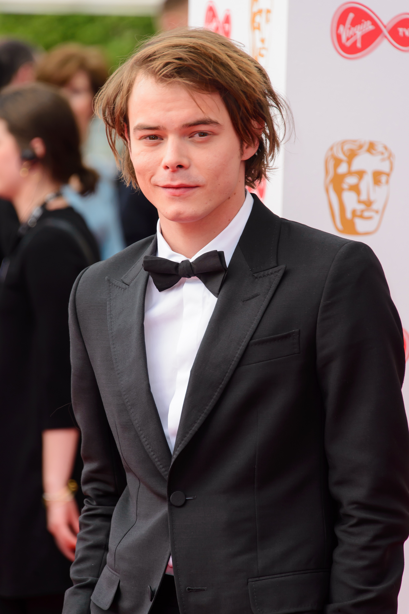

Джонатан (Чарли Хитон) Байерс
Джонатан — старший брат Уилла Байерса. В школе считался неудачником из-за нелюдимости.


Джонатан — первый сын Лонни и Джойс. В детстве отец брал его с собой на охоту, но Джонатан находил это занятие не самым подходящим для себя, так как воспринимал убийство животных близко к сердцу. После того, как Лонни заставил сына убить кролика, мальчик плакал и грустил ещё девять дней после этого происшествия. После того, как Лонни бросил семью, Джонатан стал образцом для подражания для своего младшего брата Уилла. По словам Джойс, Джонатан мечтает об учёбе в Нью-Йоркском университете с шестилетнего возраста. Джонатан увлекается музыкой и фотографией. Примерно в 1982 году он записал все лучшие треки на кассету и отдал их Уиллу.